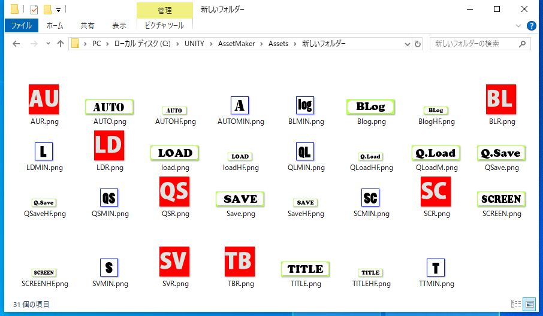
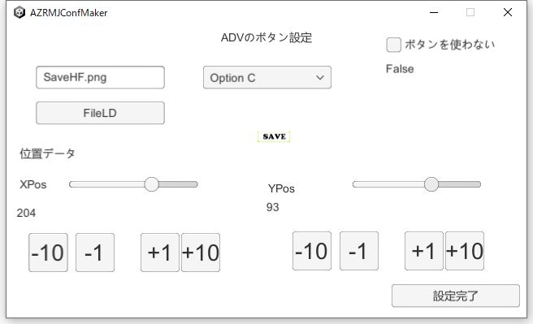
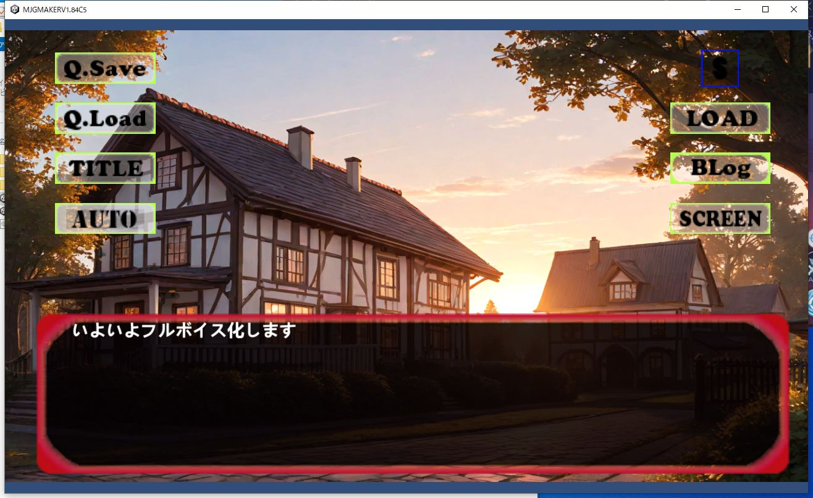

|
シナリオモードのボタン変更をやります。シナリオモードのボタンなのですが、基本的にはリソース内の基本画像か、若しくはAssetやZipに入れた画像を取り出して使う形になっています。 今回はアセットでやってみます。 まずアセットなので、アセット内に必要な画像を入れてアセット化します。 セーブ、ロード、バックログ、タイトルバック、オート、クイックセーブ、クイックロード、画面消去のボタンがありますので、各自用意しておきます。 |  |
|
セーブボタンの作成をやります。 ボタン画像の画面で、ドロップボタンを使うと、設定した画像名が入ります。 また、画像名にはアセットのシステム画像にあるアセット内に入っている画像を指定することで、その画像を使うことが出来ます。 スライダーで、縦の位置と横の位置を設定することも出来ます |  |
|
実際に動かしてみて、中に入っている画像が表示されたらOKです。 |  |